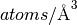

Table of Contents

The sample transmission calculator allows the calculation of the sample transmission and scattering over a given wavelength range for a particular sample material and geometry.
This UI is a front end for the CalculateSampleTransmission algorithm.
The algorithm assumes a flat plate sample which is perpendicular to the beam.

The wavelength range to calculate transmission over can be given either by providing a single binning range in the format of a start, width and end value or by providing a bin parameter string as used in the Rebin algorithm.

The sample details required are the chemical formula which is to be given in the
format expected by the SetSampleMaterial
algorithm, number density per atom in  and
thickness in  .
.
The output is given in a plot of the transmission percentage over wavelength and a table of statistics for the transmission (maximum, minimum, mean, median and standard deviation) as well as the scattering percentage for all wavelengths.
Categories: Interfaces | General
{kind=link}